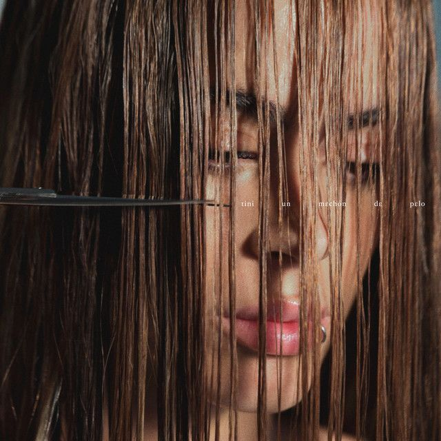

Música
BAR
22
Mienteme
La loto
Ella dice
La triple T
High

Tini cupido
Tini quiero volver
sueltate el pelo
Tini Tini Tini

Un mechon de pelo
Martina Stoessel Muzlera más conocida como TINI, es una actriz, cantante, bailarina y modelo argentina, conocida por interpretar a Violetta Castillo en la serie de Disney Channel Latinoamérica, Violetta.
Nació el 21 de Marzo de 1997 en Buenos Aires, Argentina. Su primera participación en televisión fue en 2007 con un papel menor en la telenovela argentina Patito Feo. Más tarde en 2011, fue la encargada de interpretar la versión en español del tema "The Glow" (Tu Resplandor), que forma parte del álbum Disney Princesas: Canciones de las Princesas.
En 2011, con tan solo 14 años, fue elegida para protagonizar la serie de Disney Channel Latinoamérica, Violetta, una coproducción entre Latinoamérica, junto a Europa, Medio Oriente y África, la cual se estrenó el 14 de mayo de 2012. En el año 2013, fue convocada para participar del doblaje italiano de la pelicula de Disney Pixar, Monsters University, prestándole su voz al personaje Carrie Williams. Tras el gran éxito de las primeras 2 temporadas de Violetta, en julio de 2013 empezó junto al elenco de la serie, la primera gira internacional, Violetta: en vivo, que duró hasta comienzos del 2014 y recorrió diferentes escenarios de Latinoamérica y Europa, realizando un total de 199 conciertos.
En 2014 fue la encargada de interpretar los temas "Libre Soy" y "All'alba Sorgerò", versión en español e itaniana de "Let it Go", canción original de la pelicula de Disney, Frozen, que fue utilizada para promocionar la pelicula en Latinoamérica, España e Italia. El 2 de mayo de 2014 se presentó en el Monumento de los españoles, en Buenos Aires, en un show musical gratuito llamado Juntada Tinista, bajo el lema "Cuidemos el planeta" en el que logó reunir a más de 250 mil personas. Al día siguiente presentó su libro Simplemente Tini en la sala Jorge Luis Borges, de la Feria Internacional del Libro de Buenos Aires. En septiembre de 2014, fue convocada por el papa Francisco para participar en "Partido Interreligioso por la Paz" realizado en el Estadio Olímpico de Roma donde cantó los temas: "Nel mio mondo" e "Imagine", de John Lennon.
El 29 de abril de 2016 lanzó TINI (Martina Stoessel), su primer disco solista, bajo el sello discográfico Hollywood Records el cual obtuvo disco de oro en sus pocas horas de lanzamiento en Argentina y el mismo certificado en Polonia, Austria y Brasil. En julio presentó "Great Escape", su primer sencillo y video como solista. También se convirtió en la cara de la marca de ropa Cher. En marzo del 2017, Tini empezó su primera gira solista llamada Got Me Started Tour que recorrió 9 países y 17 ciudades en Europa. Lanzó su línea de ropa llamada, Tini by Martina Stoessel. También lanzó una versión deluxe de su álbum debut, que cuenta con la colaboración de Sebastian Yatra. Junto a David Bisbal, grabó la canción "Todo es posible", que forma parte del soundtrack de la pelicula Tadeo Jones 2: El secreto del rey Midas. Además colaboró con la banda The Vamps para el álbum "Night & Day", participando de la canción "It's a Lie", que fue lanzada el 14 de julio de 2017. En octubre de ese mismo año, grabó la canción "Te quiero más", junto al cantante venezolano Nacho, por el cual obtuvo disco de platino digital en su país natal. Para finalizar el año, anunció que colaboraría con el cantante estadounidense MAX Schneider en su canción "Ligths Down Low" en su versión latina. Además se convirtió en la cara de la marca Pantene. En agosto de 2018 fue portada de la revista Vogue Latinoamérica. Tras varias participaciones en la pantalla chica, confirmó su participación en la primera película de drama dirigida por Jackie Chan, The Diary. Además formó parte del jurado de la segunda edición de La voz argentina, junto con Ricardo Montaner, Soledad y Axel.
Durante el 2018, salieron nuevos sencillos como "Princesa", junto a la cantante colombiana Karol G el cual fue disco de oro en Argentina, "Consejo de amor" con Morat y Quiero volver que fue la segunda colaboración con el colombiano Sebastián Yatra y que dió nombre a su segundo disco solista, el cual fue lanzado el 12 de octubre de 2018. En diciembre del mismo año empezó su segunda gira solista llamada Quiero volver Tour en el Estadio Luna Park y que la llevaría por diversos países de Latinoamérica y Europa. Ademas lanzó "Por Que Te Vas" junto al dúo Cali y El Dandee.
Ese mismo año, fue elegida por Álvaro Soler para acompañarlo en el remix de su hit "La cintura" junto con el estadounidense Flo Rida. Además fue parte del remix de la canción "Lo malo", de la cantante colombiana Greeicy junto a Aitana y Ana Guerra. También en ese año, el DJ Inglés, Jonas Blue confirmó la participación de Tini en su disco debut "Blue" en la canción "Wild", cuyo videoclip se grabó en Bogotá, Colombia. También colaboró con Alesso para la cancón "Sad Song". A mediados del 2019, presentó su sencillo 22, el cual cuenta con la colaboración de Greeicy y la actuación especial de Sergio "Kun" Agüero y Pablo Lescano. Fue parte del doblaje para la pelicula UglyDolls: Extraordinariamente feos prestandole su voz a Moxy, el personaje principal de la pelicula. En 2018 se convirtió en embajadora de Agatha Ruiz de la Prada, promocionando los perfumes Rebel Love y WOW Girl. Ese año también lanzó sus sencillos "Suéltate el pelo", "Fresa" junto a Lalo Ebratt y "Oye" junto a Sebastián Yatra.
El 9 de marzo de 2020 finalizó oficialmente su segundo tour solista Quiero Volver Tour. Durante 2020 lanzó "Recuerdo" junto al dúo venezolano Mau y Ricky, "Ella Dice" junto a Khea y "Un Beso en Madrid" junto a Alejandro Sanz. Además colaboró con Ovy On The Drums para la canción "Ya no me llames" y R3hab para la canción "Besame (I need you)" junto a Reik. El 3 de diciembre de 2020 lanzó su tercer álbum de estudio titulado TINI TINI TINI, obteniendo el debut más grande de una artista Argentina en Spotify, donde además se dió a conocer que fue la artista Femenina Argentina más escuchada en el mundo por segundo año consecutivo.
Tras meses sin lanzar música, el 29 de abril de 2021, Tini lanzó la canción «Miénteme» junto a María Becerra. El sencillo rompió récords en todas las plataformas y tuvo una fuerte repercusión en las redes sociales de todo el mundo. Con esta canción, la artista dio inicio a su nuevo álbum, el cual no ha sido lanzado todavía. Tras el éxito que tuvo este hit, Tini lanzó «Maldita Foto» junto a Manuel Turizo. Tras un año y meses sin subirse a un escenario, la artista argentina volvió a dar presentaciones en festivales de todo el mundo.
El 11 de noviembre de 2021, Tini lanzó su colaboración junto a L-Gante, titulada «Bar». Esta canción se convirtió en un éxito total y al igual que sus otras canciones, tuvo un muy fuerte impacto en todas las plataformas musicales, así como en el mundo de las redes sociales. Ese mismo día, la artista anunció el inicio de su nueva gira "TINI Tour 2022" en el Hipódromo de Palermo. Las entradas se vendieron en cuestión de horas, por lo que se agregaron funciones. Para finalizar el 2021, la artista lanzó «Aquí Estoy», un sencillo promocional junto a Pantene.
El 2022 llegó de la mano de presentaciones en festividades por parte de la artista. Fue en un pequeño tour de verano en el que Tini visitó diversos países de Latinoamérica. Las presentaciones que más destacan son en la Quinta Vergara (15 000), Posadas (100 000), el Festival Nacional de Peñas de Villa María y la Fiesta de la Confluencia en Neuquén. En este último, Tini se presentó frente a más de 350 000 espectadores, convirtiéndola en la artista femenina argentina con más convocatoria de la historia en un concierto.
En febrero de 2022, se lanzó «Fantasi» junto a Beéle. Tras el final de la gira de verano, comenzaron los ensayos para su nueva gira. A principios de marzo de 2022, el padre de la cantante, Alejandro Stoessel, fue internado por casi un mes tras sufrir de una hemorragia estomacal. Tras este suceso, el inicio de la gira fue aplazado para mayo de 2022. Tras el alta de Stoessel, todos los proyectos se reanudaron, y el 20 de mayo de 2022, se llevó a cabo el primer show del "TINI Tour 2022" en el Hipódromo de Palermo. Fueron seis funciones con un despliegue musical, escénico y con una producción de magnitud internacional. Tras haber reunido a más de 120 000 personas en seis funciones seguidas, se anunciaron nuevas fechas de la gira por todo el mundo. Según los medios de comunicación, es la gira más convocante hecha por una artista argentina en la historia.
Con lanzamientos como «La Loto» junto a Becky G y Anitta, «El Último Beso» con Tiago PZK y «Muñecas» junto a La Joaqui y Steve Aoki, la artista argentina sigue conquistando los más altos niveles en todos los ránquines mundiales. El 16 de febrero de 2023, lanzo su 4ro álbum de estudio «Cupido»
La cantante abrió su corazón con cada tema que presentó en su nuevo álbum “Un mechón de pelo” y decidió contarle a sus fanáticos cómo fue el proceso creativo de cada single.
Habiendo trabajado más de un año en la composición, creación y difusión, terminó la espera. El pasado 11 de abril, Tini Stoessel publicó oficialmente su nuevo disco Un mechón de pelo, en el que reflejó las distintas crisis personales, emotivas y artísticas que atravesó la cantante y actriz, algunas en el último año y medio y otras cuando era más chica.
BAR
22
Mienteme
La loto
Ella dice
La triple T
High
Tini cupido
Tini quiero volver
sueltate el pelo
Tini Tini Tini
Un mechon de pelo